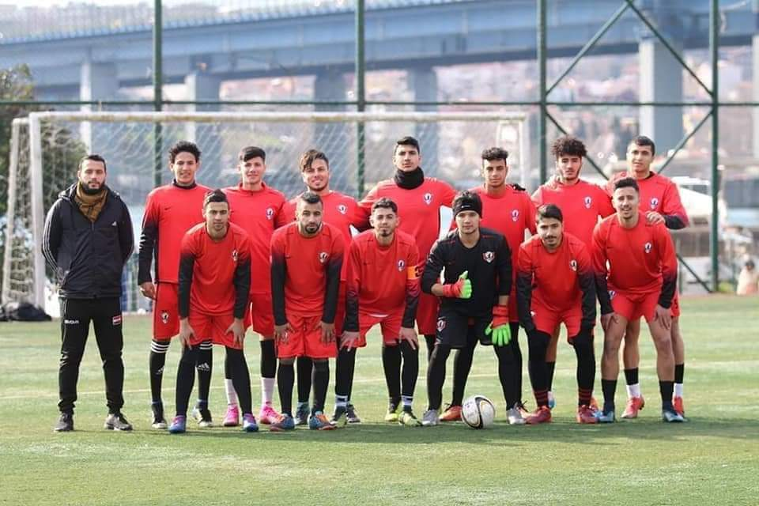
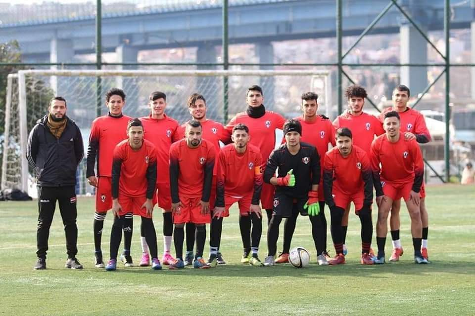
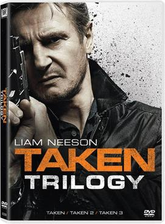
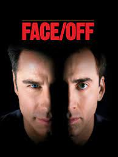

Futbol
 

benim en çok sevdiğim ve ilgi alanlarımın başında yer alması gerektiğini düşündüğüm şey futbol çocukluğumdan beri futbol oynuyordum bir kaç kulüb'te yer aldım ve hala en ilgi duyduğum şey futbol'dur.
filmler


boş zamanımda ise evde yepmaya sevdiğim iki şey var biri şarkı dinlemek ikincisi ise film izlemektir.İzlemeyi sevdiğim film türleri aksiyon ve korku filmleridir. taken filmi en sevdiğim filimlerden biri bol aksiyonlu ve heycanlı bir filmidir.face/off filmide benim için mükemmel bir filimdir.